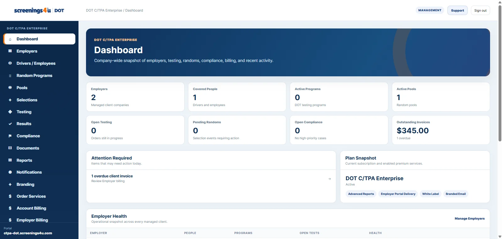

REQUEST A DEMO
EmployerWorkforce, testing, compliance and reporting
Owner-OperatorFMCSA random consortium and testing workflows
C/TPAEmployer portfolios, pools, billing and delivery
See how Workforce DOT fits the way you actually operate.
We tailor the demonstration around your customer type, DOT agency, workforce structure, and daily compliance workflows—not a generic product tour.
WORKFORCE DOT / DASHBOARD

WHAT WE CAN SHOW
Choose the workflows that matter to your team.
Your demo can focus on one area or walk through the full operating flow from workforce setup through testing, results, records and reporting.
Workforce & programs
Covered employees or drivers, DOT programs, locations, roles, and eligibility.
Pools & randoms
Pool membership, consortium participation, random selections, and follow-up work.
Testing operations
Testing orders, collection-site workflows, status tracking, and result summaries.
Compliance records
Documents, acknowledgments, post-accident activity, reminders, and audit history.
Reporting
Operational reports, advanced reporting, MIS support, and management visibility.
C/TPA operations
Employer portfolios, billing, branded delivery, client settings, and enterprise controls.
DEMO REQUEST
Tell us what you want to see.
Give us enough context to prepare a useful walkthrough. We will use your selections to shape the demo around your operation.
Good demo topics
- Your current testing and random-program process
- How many covered employees, drivers, or employer clients you manage
- Which DOT agency or agencies apply
- Any reporting, billing, branding, or integration requirements